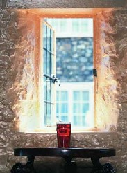

|
GREAVES' RULES
When two or more enter the pub together, one - usually the first through the door - will begin proceedings with the words
"Now then, what are we having?" He or she will then order and pay. This purchase is known as "the first round".
This player, or "opener", will remain "in the chair" while other friends or colleagues come through the
door to join the round. He will remain in this benefactory role until either (a) his own glass sinks to beneath the half way mark or (b) another drinker finds himself almost
bereft of his original refreshment and volunteers to "start a new round".
In the absence of new arrivals, any player other than the opener may at any time inquire whether it is "the same again?"
On receiving his instructions, he will then order and pay for "the second round". (N.B. The second round is the last one to be specifically numbered. Beyond
that point, nobody wishes to be reminded how many they have had and, anyway, no-one should be counting.)
The round acknowledges no discrimination. All players, regardless of sex, age or social status, are expected to "stand
their corner". (Pedants might like to note that we are talking here of the only "round" in the English language that also contains a "corner".
Any new entrant, joining the session after its inception, is not expected to "buy himself in" but should be
invited to join the round by whoever is in the chair (see Rule 2). If, however, he is greeted by silence he may either (a) buy a drink just for himself or (b) attempt to buy a
round for all present. If (a) or, worse still, (b) is not acceptable to the congregation then the new entrant has been snubbed and should in future seek out more appreciative
company. There is one important exception...
For reasons of haste or poverty, a new arrival may insist on buying his own with the words "Thanks, but I'm only
popping in for one". If he is then seen to buy more than three drinks, he will be deemed a skinflint, neither broke nor in a hurry to get home, and will be penalised
for his duplicity by being ordered to buy the next round.
Although everyone in the group is normally required to buy at least one round before leaving, the advent of either drunkenness
or closing time sometimes renders this ideal unattainable. In such circumstances, any non-paying participant will (a) have "got away with it" and (b) appoint
himself "opener" at the next forgathering. However, any player who notices on arrival that the round has "got out of hand" and has no chance of
reaching his turn before "the last bell", may start a "breakaway round" by buying a drink for himself and all subsequent arrivals. This stratagem
breaks the round in two, keeps the cost within manageable proportions and is the only acceptable alternative to Rule 5.
When a pressing engagement elsewhere precludes further involvement, it is wholly unacceptable for any player who has
not yet been in the chair to buy a round in which he cannot himself be included. In such circumstances Rule 7 (a) and (b) therefore apply.
In the event of any one glass becoming empty, a new round must be called immediately. This should not necessarily be
called by the owner of the empty glass, however, because this place the slower drinker at an unfair fund-saving advantage. (N.B. Whereas it is permissible for any member
of the round to decrease the capacity of his individual order - "just a half for me, please" - the opposite does not hold good. A large whisky, for instance, may
be offered by the chair but never demanded of it.)
Regional variations. In various parts of the country, a particular establishment will impose its own individual codicil. In one
Yorkshire pub, for example, the landlord's Jack Russell terrier expects to be included in every round. Where such amendments exist, and are properly advertised, they
must be piously observed. We are, after all, talking about a religion.
|
|